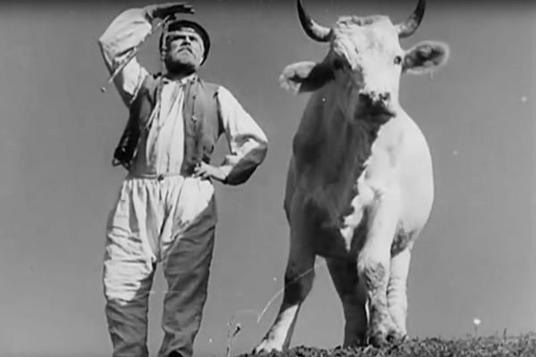
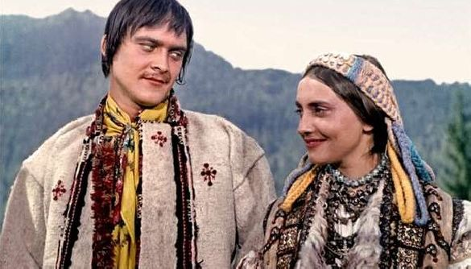
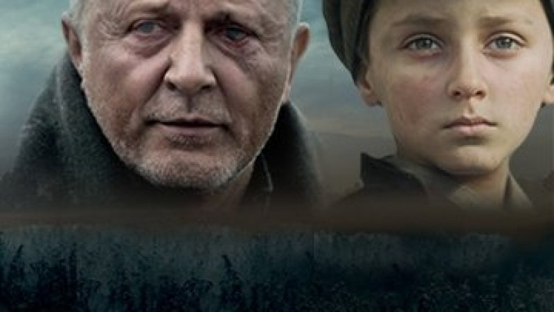
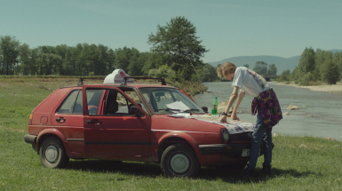
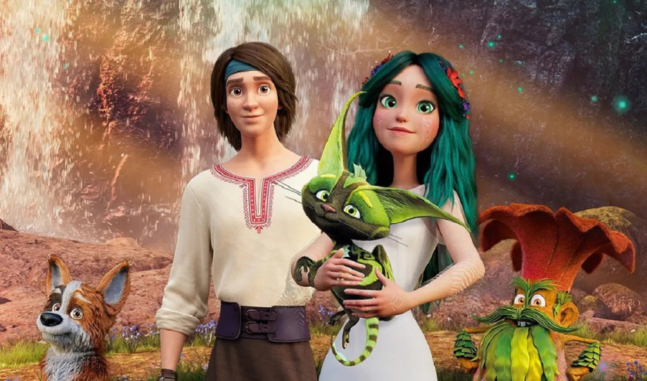

Українське кіно
Відкрийте найкращі українські фільми та режисерів.
Дослідити фільмиПро українське кіно
Українське кіно має багату історію, що охоплює понад століття. Від часів Олександра Довженка, чия стрічка «Земля» увійшла до списків найкращих фільмів усіх часів, вітчизняне мистецтво пройшло складний шлях. На цьому шляху були як періоди жорсткої радянської цензури, так і потужний ренесанс після здобуття незалежності.
Сьогодні сучасне українське кіно переживає справжній бум. Наші режисери та стрічки творять фурор на міжнародних фестивалях у Каннах, Берліні та Венеції, завойовуючи престижні нагороди та відкриваючи світу правду про нашу культуру, боротьбу та ідентичність.
Популярні українські фільми

Тіні забутих предків
1965 рік
Шедевр Сергія Параджанова про трагічне кохання Івана та Марічки серед гуцульських Карпат. Філософська притча про долю, традиції та поетику людської душі.
Детальніше
Поводир
2014 рік
Історичний драм-фільм Олеся Саніна про американського хлопчика Питера та сліпого кобзаря Івана Кочергу в часи трагічних подій 1930-х років в Україні.
Детальніше
Мої думки тихі
2019 рік
Авторська трагікомедія Антоніо Лукіча про молодого звукорежисера Вадима та його маму. Історія про дорослішання, пошук себе та складні сімейні стосунки.
Детальніше
Мавка. Лісова пісня
2023 рік
Анімаційний фільм за мотивами драми Лесі Українки. Історія про кохання Мавки, Душі Лісу, та звичайного музиканта Лукаша, а також боротьбу за мир у магічному світі.
ДетальнішеПлем'я
2014 рік
Новаторський фільм Мирослава Слабошпицького, знятий жестовою мовою без жодного слова чи субтитрів. Жорстка драма про життя в інтернатах та підліткову ієрархію.
ДетальнішеВідомі режисери
Олександр Довженко
Український режисер, письменник,автор "Землі"
Сергій Параджанов
Всесвітньо відомий український кінорежисер. Автор шедевра «Тіні забутих предків» (1965) та новаторської стрічки «Колір граната» (1969), що визнані світовою класикою поетичного кінематографа.
Антоній Лукіч
Яскравий представник нового покоління українського кіно. Режисер популярної трагікомедії «Мої думки тихі» (2019) та іронічної драми «Люксембург, Люксембург» (2022).
Мій улюблений український фільм
Мавка. Лісова пісня
2023 рік
Анімаційний фільм за мотивами драми Лесі Українки. Історія про кохання Мавки, Душі Лісу, та звичайного музиканта Лукаша, а також боротьбу за мир у магічному світі.
Детальніше